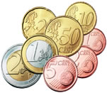

Euro  coins
If you like encode2mpeg and you want to contribute back something to
the author, here is what you can do. I am looking for 15 Euro coins in
order to complete my collection of the european currency introduced in
2002 in 12 european countries. The missing coins are the following:
Luxembourg: 1, 2, 10, 50 cent, 1 euro (year 2002)
Belgium: 1, 2 cent (year 1999 or 2000)
Finland: 1, 2, 5, 10, 20, 50 cent, 1, 2 euro (all from the first year)
If you can contribute even only one of them, please contact me.